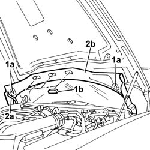

7025A20 Bonnet lid rear sound insulation panel - R.R.
- Path
- Procedures > 70 FITTINGS > 7025 COMPARTMENT LIDS > 7025A BONNET LID > 7025A20 Bonnet lid rear sound insulation panel - R.R.
- Kind
- repair procedure (removal / refitting; the operation number is the code)
- Applies to
- all engines; all production periods
- Interactive page
- https://sloeber94.github.io/elrnDB-lThss/en/#/111774
Applies to: all engines; all production periods
 Removing
Removing
 Refitting
Refitting- Open the bonnet.
1. Rotate the two retaining springs (1a) and release the caps (1b).
2. Disconnect the windscreen washer fluid supply pipe (2a) and remove the trim (2b).

Applies to: all engines; all production periods
Refitting
Removing- Connect the screen washer fluid supply pipe and place the trim in position.
- Fit the caps and close the retaining springs.